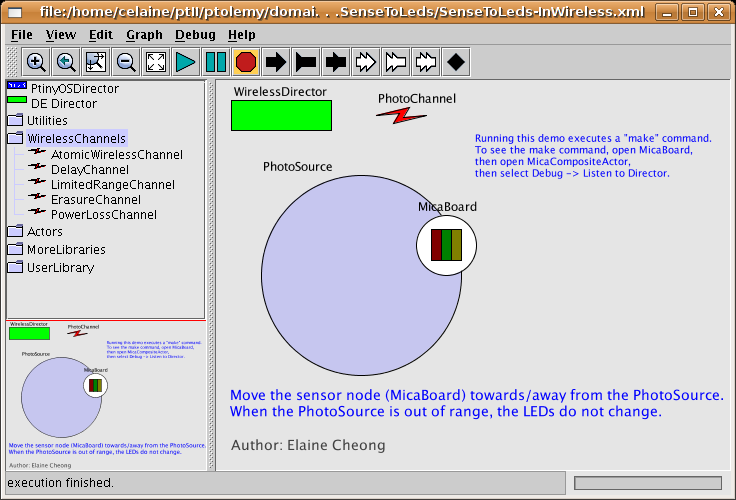
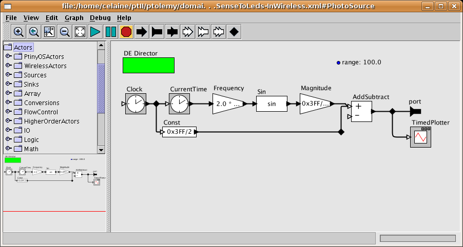
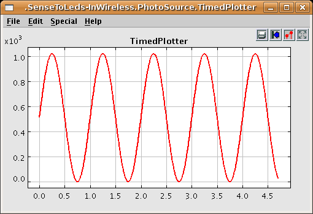
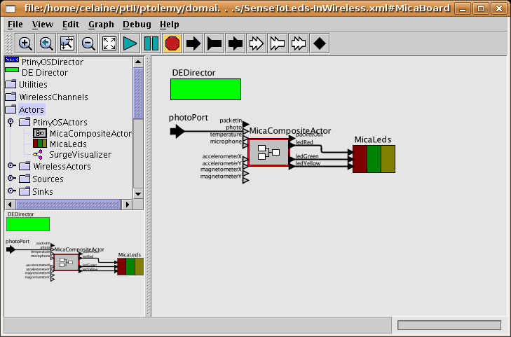
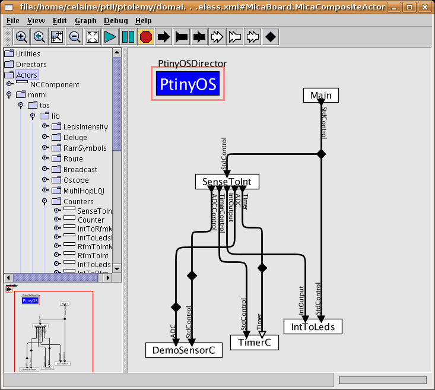
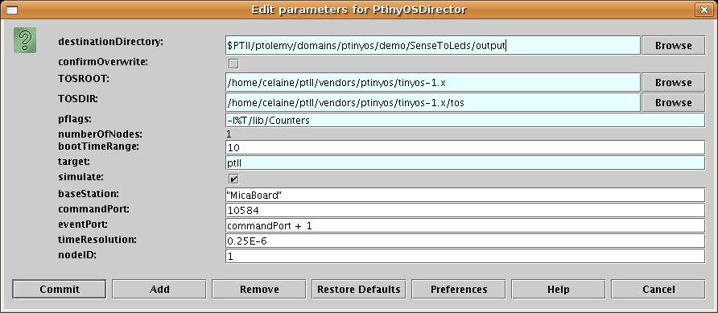

Top level view of SenseToLeds:

Model of light source:

Plot of output of light source:

Hardware level view of wireless node:

Software level view of wireless node with nesC/TinyOS application:

PtinyOSDirector
